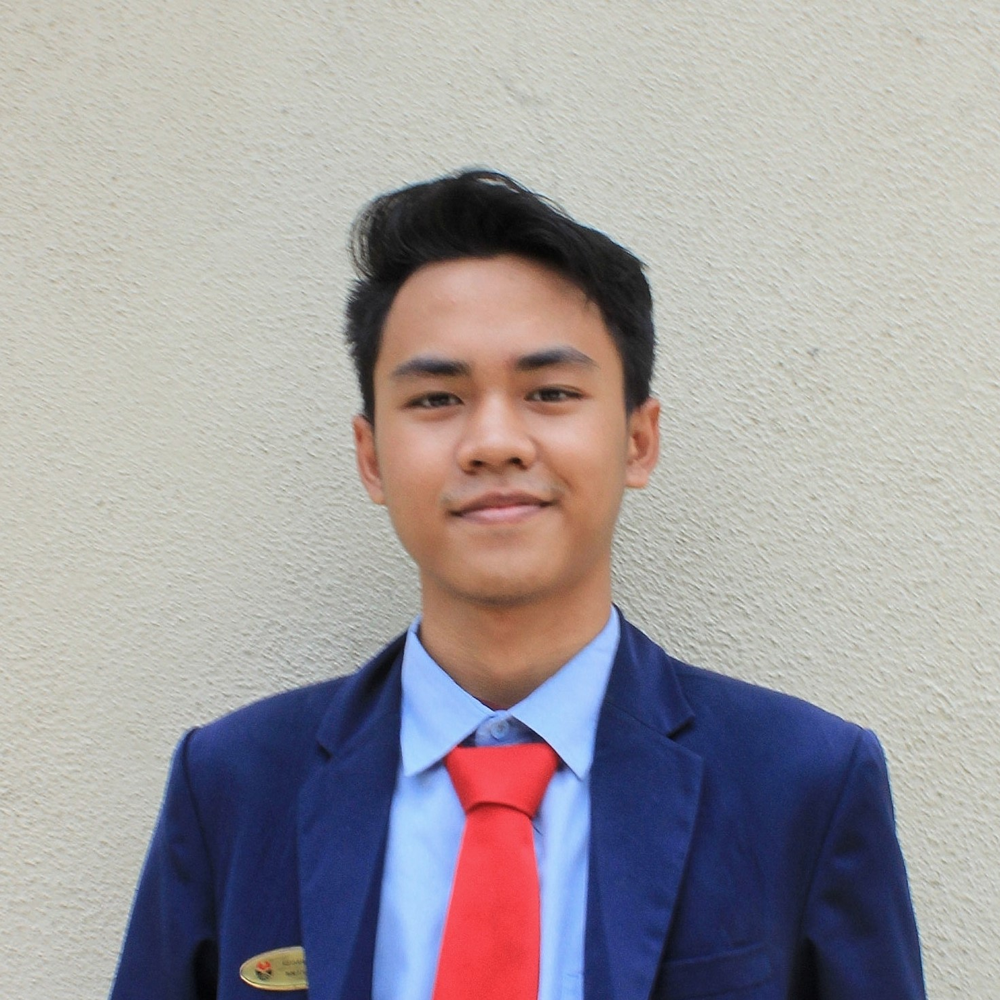

Hello,
I am Keisar Putra Ramadhan
Fresh Graduate
Sarjana Pariwisata

Lahir di Jakarta pada tanggal 8 Januari 1999. Merupakan lulusan Universitas Pendidikan Indonesia jurusan Manajemen Industri Katering yang telah lulus pada tahun 2022 dan mendapatkan gelar S.Par (Sarjana Pariwisata). Saat ini sedang mendalami bidang teknologi yaitu dengan mengikuti pelatihan Mobile Apps Developer dari BBPVP Bekasi dan juga Fundamental Web Programming oleh Hacktiv8 dari prakerja.
Saya termasuk seseorang yang sangat mudah memiliki ketertarikan pada berbagai hal baru yang ada di lingkungan saya maupun yang tidak. Namun beberapa bidang yang paling saya minati/sukai dalam melakukannya adalah: